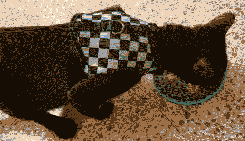

a while back, i had been putting on my cat from hell to get myself to sleep. from watching that show i've actually picked up a few helpful tips from jackson galaxy that have helped me out with my cat, steve minecraft.
steve is a VERY active cat. he's aprox. 6 months old and he just has SO much energy. i play with him whenever i can but it's clear that is not enough for him. i have a cat tree next to a window in which steve LOVES sitting and napping there while looking outside. from the show i got the idea that walking my cat on a leash could be a really good activity where he could release some of that energy he isn't able to release inside the house. honestly, leash walking a cat is still a crazy concept to me. but i really need to say that while it takes time and patience, is it incredibly worth it to try it if you have a very active indoor cat.
before getting the harness, i watched some videos here and there on youtube about what to know and how to train your cat to wear the harness and be OKAY with it. the gist was basically give your cat lots of treats while working with the harness so he knows this is a Good thing. and said treat has to be the best thing your cat has ever tasted. a treat they would do ANYTHING for.
i bought a cat harness and those cat treats that are like a tube full of sauce and man does he love that thing. as i gave him the treat i was slowly showing him the harness and putting it on him. during the 2nd day of training i managed to fully put it on. he was a bit woobly at first but then i moved around my place with the treat on my had so he could follow it around and practice walking with the harness on.
bribing him...
during the first 3 days i would give him tube treats while putting on the harness. i feel like after the 3rd day this bribe was not necessary since he can already associate the harness with going outside. and of course, he LOVES going outside. now i just pick up the harness and ask him if he wants to go outside while sitting on the floor near the door. i always let him get to me so i can put the harness on him, it's not recommended to go after your cat trying to put it on. if he wants to go outside he will go to me and try to stand still while i put on the neck part of his harness. when it comes to the part around his chest he can start getting a bit impatient if i'm taking too long. if steve starts getting TOO impatient i will take it off and just wait until later to try and put it on him again. it's very important to respect your cats boundaries while doing this or else they will make the process of getting the harness on even harder than it already is. once the harness is on he will start walking around and will sometimes go away from me from a bit. i've managed to teach him that once the harness is put on and i'm doing the clicks of the leash, that means he will GO outside! once i do this he will quickly approach me so i can put the leash on and then i open the door to let him go.
during the tutorials i have been watching they always say to not just open the door to your cat because they will start dashing towards it even without a harness. this is very true. they recommend to just pick up your cat and put him outside. i am honestly a bit lazy and because of that i am suffering the consequences of my actions. slowly though, i have been teaching steve that he will not go outside if he doesn't have his harness on.
i'm hoping to eventually get another harness (something like this) that doesn't involve velcro and it's easier and faster to put on and take off. this harness does the job well and it is pretty secure (as long as you know what you're doing!) but if you wanna have an easier time with the harness, i wouldn't recommend the one i currently have.
when taking steve out he mostly spends his time smelling things. i'm not really bugging him to walk the block with me, so i just let him explore the area outside of my place at his own pace every time i take him out. it is very important to know how to handle the harness and all of that while "walking" your cat though. i can't pull from the front or else he WILL escape his harness. if i don't want him to go a certain direction, i always make sure i'm pulling from behind him / the harness.
walking steve!
every day i walk him i can see him getting a bit more of confidence and wanting to explore farther away. he is pretty adventurous but he walks very cautiously. something he seems to be VERY scared of that freaks him out is the sound of cars passing by. i guess with time he will get used to them, but it's something i have to be very careful about. loud sudden noises also scare him a bit. keeping him from unwanted places used to be a bit rough at the start, but i think now he is getting the memo that if i'm yanking him, he won't be able to go that way.
there's a lot of stray cats around my place so that is also another thing i have to keep an eye out whenever i walk steve. none of them have been hostile to him and he always wants to get near them SOOOO bad. i just yank him out a bit and he will often ignore them and keep on smelling whatever he was smelling. if he gets to obsessed with them i just pick him up and get him inside. i ain't dealing with that.

once i get steve inside the house he will plop down somewhere in my cold room. i always give him a treat once we are done walking! i'm using one of those treats licking plates here so i can have both of my hands free to take off his harness.
i have been taking steve outside on a daily basis for the past week for roughly 15 mins or so and it has honestly improved his behavior sooo much inside the house. i have noticed he seems much quieter and calmer now. and i can tell he isn't as bored as before. he used to meow in front of my door during the night and morning but now he barely does it. he also used to get these insane zoomies in the morning which have basically disappeared now. i've honestly haven't had that rough of a time while teaching steve how to use his harness but this shit is still not easy! but seeing him being less bored inside makes it really worth it for me.
kinda meh... i'm procrastinating studying for calculus
i ate for breakfast an omelet with ham and butter toast
this is like the equivalent of someone not talking for a week and then talking for 5 hours straight.11.apr.25
also it's my site's 2 year anniversary today!
today marks 2 years of sharing and building my personal site on the interwebs! i honestly find this place pretty incredible. i did all of this by myself! it is something i am pretty proud of. i don't really have anything special planned for today though. i've already expressed many times how dearly my site is to me. will probaly write a blog post about it at some point. but anyways, today i have a bit of free time to be able to write in here for a while about what i've been up to. i should do a script where there's balloons on my homepage whenever its april 11. and talking about JavaScript!
the part where i talk about coding
i've actually been able to do more stuff with it thanks to my intro to programming class. i talked a little bit about this on my JS learning page but the class is basically about learning the fundamentals about programming using C++ as our programming language. i've been having so much fun in that class coding my assignments and having my crack at them. it's a bit hard at times but i really do love the journey of being able to write a functioning program solving a problem. and to my luck, the friend that told me that C++ is actually very similar to JS was not lying to me. i said at one point that it looked a bit scary. but actually i think it's kind of a beautiful language now. and while yes, JS and C++ share a lot of the syntaxis and other stuff, they have A LOT of unique quirks. i was actually reading up on the side a book about JS called javascript for dummies and i had to stop reading it for that reason. they are VERY similar to each other but also not. i was definitely gonna mix them up by learning these 2 languages at the same time. so the in-depth JS learning is gonna be for another time. maybe during the summer.
i think the coolest part is still being able to get these concepts learned in my class and being able to apply them in JS! i was able to write a tiny piece of code that pops up a dialog when someone wants to access my chatbox. because i didn't want to dive into JS just yet i still wanted to learn something not exactly uni related on the side so i started following this frontend developer roadmap and i've been learning so many useful little bits because of it! because while yes, i know a good amount of this stuff (at least HTML and CSS) there's still SO Many Thing that i've simply missed or haven't heard about that are SO USEFUL. for the chatbox pop-up i used an HTML tag called dialog that has it's own methods for opening it and closing it with JS. that was so helpful for what i wanted to do. i didn't have to create a seperate div, adjust the position of it, hide it from the homepage, or anything like that. it's so awesome. i mostly been going through the roadmap just before going to sleep but i really recommended to anyone who's interesting in learning more. once i get to the JS module, that's when i'll lock in. i'd love to improve the little system i have for /journal with JS.
i also want to eventually go through learning some backend stuff, and use that knowledge for my siinamota fanlisting so i can handle the members database and all that. i know old af fanlistings use PHP but like i really have no clue how they do all that. eventually i'll find out.
what i've been up to
i feel like this is mostly what i've been up to for the past 2 months. honestly, life and uni is basically consuming all of my free time. calculus is very very HARD for me so i'm always practicing whenever i can. i got two C's on the past 2 exams and all that is left to take is one more exam and the final. i hope to pass the class with a B, that would be so cool. but if not, i'll take a C. but good lord is it a lot of work for me to get decent grades in calculus. next week is spring break and im hoping to REALLY practice and practice for calculus.
and at least spend 1 day from that spring break week playing minecraft. oh, do i miss minecraft so much! i haven't been playing anything as of late either. during busy times like these i used to play a little bit during my commute time in the train but recently i found SUCH a great app for reading PDF files on my android tablet that i've just been reading school books whenever i'm bored like that. i need to find more PDFs. if anyone knows a site pls do let me know! i would love to get back to reading things once i'm done with this semester. i should do a list of all the things i'd like to do during spring break and my summer break.
he is kinda HUGE now. he has so much energy oh my god he gets these insane zoomies in the morning when i wake up. like CRAZY. he gets so excited from seeing me after 8 hours of not being able to see me. and he is very PUNCTUAL. he wakes me up at 7am every day because i've been waking up at that time for uni every day of the week and he got accustomed to it. he is basically my 2nd alarm. but he only shuts up once i give him attention. despite everything he is still my baby. there was a week were he started meowing like during the night but that went away as soon as he learned that i was not opening the door for him until the morning. and honestly? while sometimes i'd like to sleep more, i think it's also nice that he kinda obligates me to get up in the morning. sticking to a good sleeping schedule thanks to my annoying ass cat i will get a harness soon so i can start taking him outside and such. he always wants to go outside so i know he will love the activity but idk how much he will love the harness. i've been watching a few videos here and there, and the trick is to just bribe them into being OK with having a harness on. give them treats around the harness, etc, etc. positive reinforcement. it will proably take a while with him given how i put him a collar once (those detachable ones) and i have NO CLUE of where in my apartment he lost it ?!?!?!? bruh...
my most recent sickening
i got sick recently and by recently i mean around march 18. man let me tell you i was FUCKED UP. the worst part was that the day after i had a CALCULUS EXAM not saying the reason why i got a C was mainly because i was sick but the pounding headache i had during the exam DID NOT HELP. my stupid ass went to go to work that weekend and i spoke too much to the point where my throat was hurting. next day i had lost my voice. and you know what? i spent an entire week with no voice because of that. whispering was the only way i could communicate to people if i really had to. and man. i regret pushing through my hurting throat for my minimum wage retail job. after a week of no talking i was slowly getting my voice back but it was really hoarse. right now my voice is pretty much back to normal but sometimes i still sound like a 12 year old. though i think the most significant change since i lost my voice is that it's really hard to sing like i used to. not that im in a choir or something. but i like singing to myself as much as the next guy. i wonder if i did some permanent damage to my vocals or something. anyways i learned my lesson. someone should come to the store and kill me if i'm ever putting my minimum wage job over my well being.
that's awesome but how have i been doing?
i'm a little bit tired ngl!!!!!! i want to take a break from math so badly but i must pull through at the end of the day. this is something i knew i was gonna have to battle with when i picked doing a computer science degree. honestly the fact that sometimes it seems like i'm not fast enough to do the exams and all that is a bit draining. but at least i can always practice and practice more.
i think besides that i've been really enjoying this semester nonetheless. i've gotten to meet and talk to new people who are also interested in what i like to do, coding! i feel like i get really self aware which makes me very embarrassed to talk to another human being ever but i've been slowly making small steps to Not Be Like That. it feels really nice when i've able to do it too. i should also probably start working on my public speaking skills. lots and lots of things to work on and improve!

 but seeing him being less bored inside makes it really worth it for me.
but seeing him being less bored inside makes it really worth it for me. but i really recommended to anyone who's interesting in learning more. once i get to the JS module, that's when i'll lock in. i'd love to improve the little system i have for /journal with JS.
but i really recommended to anyone who's interesting in learning more. once i get to the JS module, that's when i'll lock in. i'd love to improve the little system i have for /journal with JS.
 he gets these insane zoomies in the morning when i wake up. like CRAZY. he gets so excited from seeing me after 8 hours of not being able to see me. and he is very PUNCTUAL. he wakes me up at 7am every day because i've been waking up at that time for uni every day of the week and he got accustomed to it. he is basically my 2nd alarm. but he only shuts up once i give him attention. despite everything he is still my baby. there was a week were he started meowing like during the night but that went away as soon as he learned that i was not opening the door for him until the morning. and honestly? while sometimes i'd like to sleep more, i think it's also nice that he kinda obligates me to get up in the morning. sticking to a good sleeping schedule thanks to my annoying ass cat
he gets these insane zoomies in the morning when i wake up. like CRAZY. he gets so excited from seeing me after 8 hours of not being able to see me. and he is very PUNCTUAL. he wakes me up at 7am every day because i've been waking up at that time for uni every day of the week and he got accustomed to it. he is basically my 2nd alarm. but he only shuts up once i give him attention. despite everything he is still my baby. there was a week were he started meowing like during the night but that went away as soon as he learned that i was not opening the door for him until the morning. and honestly? while sometimes i'd like to sleep more, i think it's also nice that he kinda obligates me to get up in the morning. sticking to a good sleeping schedule thanks to my annoying ass cat  i will get a harness soon so i can start taking him outside and such. he always wants to go outside so i know he will love the activity but idk how much he will love the harness. i've been watching a few videos here and there, and the trick is to just bribe them into being OK with having a harness on. give them treats around the harness, etc, etc. positive reinforcement. it will proably take a while with him given how i put him a collar once (those detachable ones) and i have NO CLUE of where in my apartment he lost it ?!?!?!? bruh...
i will get a harness soon so i can start taking him outside and such. he always wants to go outside so i know he will love the activity but idk how much he will love the harness. i've been watching a few videos here and there, and the trick is to just bribe them into being OK with having a harness on. give them treats around the harness, etc, etc. positive reinforcement. it will proably take a while with him given how i put him a collar once (those detachable ones) and i have NO CLUE of where in my apartment he lost it ?!?!?!? bruh... not saying the reason why i got a C was mainly because i was sick but the pounding headache i had during the exam DID NOT HELP. my stupid ass went to go to work that weekend and i spoke too much to the point where my throat was hurting. next day i had lost my voice. and you know what? i spent an entire week with no voice because of that. whispering was the only way i could communicate to people if i really had to. and man. i regret pushing through my hurting throat for my minimum wage retail job. after a week of no talking i was slowly getting my voice back but it was really hoarse. right now my voice is pretty much back to normal but sometimes i still sound like a 12 year old. though i think the most significant change since i lost my voice is that it's really hard to sing like i used to. not that im in a choir or something. but i like singing to myself as much as the next guy. i wonder if i did some permanent damage to my vocals or something. anyways i learned my lesson. someone should come to the store and kill me if i'm ever putting my minimum wage job over my well being.
not saying the reason why i got a C was mainly because i was sick but the pounding headache i had during the exam DID NOT HELP. my stupid ass went to go to work that weekend and i spoke too much to the point where my throat was hurting. next day i had lost my voice. and you know what? i spent an entire week with no voice because of that. whispering was the only way i could communicate to people if i really had to. and man. i regret pushing through my hurting throat for my minimum wage retail job. after a week of no talking i was slowly getting my voice back but it was really hoarse. right now my voice is pretty much back to normal but sometimes i still sound like a 12 year old. though i think the most significant change since i lost my voice is that it's really hard to sing like i used to. not that im in a choir or something. but i like singing to myself as much as the next guy. i wonder if i did some permanent damage to my vocals or something. anyways i learned my lesson. someone should come to the store and kill me if i'm ever putting my minimum wage job over my well being.